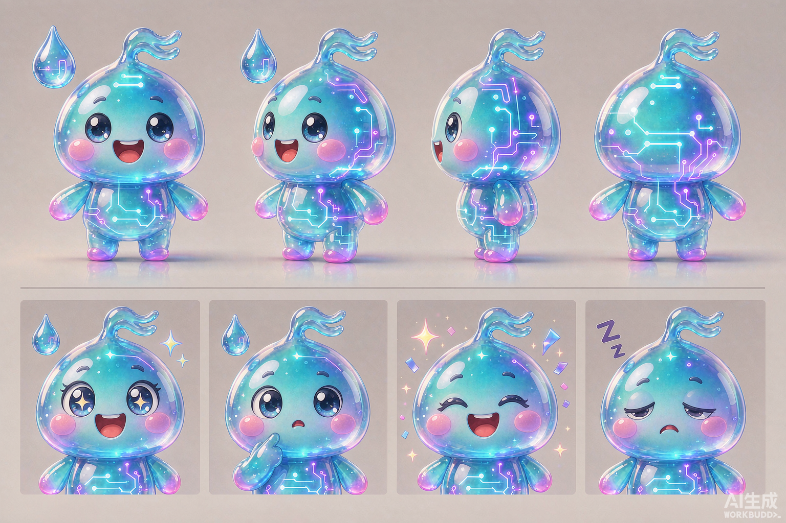

结论先行：当前社区是「内容列表」，不是「社区」——缺分类导航、缺视觉层次、缺身份表达、缺发布动机。
| 模块 | 现状（已核实） | 核心问题 |
|---|---|---|
用户广场CommunityPage |
单列文字卡片流（类型徽章+标题+纯文本摘要+操作行）；3 个 tab（广场/我的作品/我的收藏）；无频道、无搜索、无关注流入口 | ① 无分门别类 → 内容多了必然淹死；② 卡片无封面 → 扫读效率低、视觉单调；③ 「关注作者」散落在卡片操作行，没有关注聚合页 |
用户发布composer |
内嵌裸表单：类型下拉 + 可见性下拉 + 标题 + 正文；保留「素材库 / AI 工作站成果导入」 | ① 无封面、无摘要、无标签 → 发布物在 feed 里没有「脸」；② 表单无分区引导 → 新用户不知道该填什么；③ 导入特性是差异化优势，但藏得太深 |
内容详情CommunityPostDetail |
右侧窄抽屉：作者行 + Markdown 正文 + 评论列表；深链 ?post= 已支持 |
① 无封面 hero、无标签、无数据行 → 详情页没有「作品感」；② 评论不分好评/吐槽/问答 → 讨论质量不可辨识；③ 抽屉太窄，长文阅读体验差 |
联系人ChatPage |
三栏（会话/聊天/联系人）；从社区发现用户、建群、邀请码加入 | ① 视觉与其余三模块完全脱节（无头像体系、无未读徽章层次）；② 分享到聊天只是纯文本 → 与广场无联动感；③ 关注关系与联系人两套体系互不相通 |
后端communityService |
posts 表仅 type/title/body/source_refs/visibility/status；comments 无类型；PG + memory 双仓储 |
无 channel/tags/cover/summary 字段、评论无 kind、无频道过滤/关注流/搜索查询 → 数据层是所有界面问题的根 |
「用户社区」= 社区域的统一外壳（频道导航 + 身份 + 消息），下面挂四个功能模块。参考炉子的「能力网络左栏」思想，但不复刻双层侧栏（见决策 #4）。
对标炉子「广场」页的频道 tab + 场景 chips + 精选 hero + 封面卡片栅格；频道划分换成我们自己的内容生态。
| 频道 | 定位 | 数据来源 | 排序 / 特色 |
|---|---|---|---|
| 精选 | 默认 tab，运营 + 算法混合的头部内容 | 全部频道按热度加权 | 「本月最值得看」hero 卡 + 热门栅格 |
| 讨论 | 行业动态观点、求助、闲聊（含问答，P2 拆出独立频道） | channel=discussion | 最新 + 热度双排序切换 |
| 测评 | 模型 / 工具 / 硬件评测，带结论（推荐 / 观望 / 避坑 徽章为 P2） | channel=review | 按收藏数加权，鼓励深度长文 |
| 关注 | 已关注作者的内容流（未登录 → 吉祥物引导登录） | following=1 join user_follows | 纯时间序 |
| 我的作品 | 平移现有 mine tab，含草稿管理 | author=me | 草稿置顶 + 继续编辑 |
| 我的收藏 | 平移现有 bookmarks tab | listBookmarkedPosts | 最新收藏在前 |
对标炉子发布页的分区引导（「这是什么」「它能出什么」），保留并放大我们独有的「素材库 / AI 工作站成果导入」。
| 分区 | 字段 | 规则 |
|---|---|---|
| ① 这是什么 | 类型 chips（文章/作品/工作流/速报）＋ 频道 chips（讨论/测评/分享/问答） | 两组互斥单选；频道决定内容进广场哪个分区；默认 文章+讨论 |
| ② 封面与摘要 | 封面（16:9）＋ 简介（≤120 字） | 封面三档来源（下表）；简介自动提取可改，带计数器 |
| ③ 正文 | Markdown 正文 + 导入 chips | 保留「素材库最近 30 条 / AI 工作站最近成果」一键导入（差异化特性） |
| ④ 标签与可见性 | 标签 ≤5（预设+自定义）＋ 可见性（公开/仅关注者/仅自己） | 预设标签来自频道（#模型评测/#开源项目/#创作分享…）；草稿随时保存 |
| 来源 | 说明 | 成本 |
|---|---|---|
| 自动生成（默认） | 按 post.id 哈希选渐变 + 频道纹理 + 标题首词大字，前端纯 CSS/SVG 渲染 | 零存储、零接口 |
| 正文首图 | 自动提取正文第一张 Markdown 图片 URL，一键采用 | 零额外上传 |
| 图片 URL | 粘贴外链（仅 https + 协议白名单 isSafeUrl） | 零存储（后续接云存储再升级上传） |
保留抽屉形态（不打断浏览、深链已支持），宽度 420px → 68% 视口，内部结构对标炉子详情页：hero → 元信息 → 数据行 → 操作 → 评价区。
功能骨架不动（已验证可用），集中解决三件事：头像体系、分享卡片、广场联动。
炉子有炉子小灶，我们有「川」——万般硅川的川之精灵。名字取自「硅川」，一字双关：硅（晶体内芯）+ 川（不息水流）。
| 场景 | 姿态 |
|---|---|
| 空态（广场/收藏/会话） | 挥手「这里等你第一条内容」 |
| 加载中 | 思考（问号/放大镜） |
| 发布成功 | 火箭升空 + 礼花 |
| 服务不可用 503 | 睡觉 Zzz「服务打个盹」 |
| 新手引导 / 登录卡 | 挥手欢迎 |
| 徽章体系（P2） | 单色剪影做等级图标 |

标准版
渐变 + 电路纹 + 川字鳍，用于空态/引导（≥64px）
小尺寸版
≤40px 时去除电路纹只留剪影，用于徽章/角标
使用规范
最小 24px；禁拉伸变形；安全边距 = 头鳍高度；单色版取 --accent-cyan 填充
| 要素 | 规范 |
|---|---|
| 设计令牌 | 全部取自现有体系：--bg-primary/-secondary、--text-primary/-muted、`--border-color`、`--accent-*`；语义/图表色用 `--status-*` / `--chart-1..5`（跨调色板固定）。社区新样式独立作用域类 `.community-page` 下，不污染全局。 |
| 头像体系 | 统一组件 CommunityAvatar：avatar_url → 图片；否则昵称哈希 → 8 色盘 + 首字；尺寸 24/32/40；在线点可选。 |
| 徽章 | 频道徽章（青底）、类型徽章（墨底半透明覆封面）、官方（金底）、等级 Lv（黄底）、评价 kind（好评绿/吐槽红/问答蓝）。 |
| 封面渲染 | PostCover 组件：kind=auto → 渐变（id 哈希 5 选 1）+ 频道纹理 + 标题首词；kind=url → <img> + https 白名单 + 懒加载 + 失败回退 auto。 |
| 空态 | 吉祥物 + 一句话 + 主行动按钮（发布/去广场逛逛）；503 错误态沿用现有重试交互，配睡觉川川。 |
| 交互反馈 | 卡片 hover 抬升 2px + 边框着色（过渡遵循 themes.css 位移过渡「夺回范式」，只对 left/top 放开）；点赞乐观更新 + 失败回滚（复用 updateRelationship 模式）。 |
| i18n | 新增文案全部走 zh-CN.json + key（频道/评价类型/空态文案），杜绝硬编码中文。 |
-- db/migrations 社区改版
alter table posts add column if not exists channel text not null default 'discussion';
alter table posts add column if not exists tags jsonb not null default '[]';
alter table posts add column if not exists cover jsonb not null default '{"kind":"auto"}';
alter table posts add column if not exists summary text not null default '';
alter table comments add column if not exists kind text not null default 'comment'; -- comment|praise|critique|questionPOST_VIEW 扩列返回 channel/tags/cover/summary；listPosts 加 channel / q（ILIKE title+body）/ following=1（join user_follows）三个过滤参数；validatePost 扩展：channel ∈ 枚举、tags ≤5 且单项 ≤24 字、cover.kind ∈ {auto,url,extracted} 且 url 仅 https、summary ≤120（空则服务端从 body 自动提取）；kind；GET 按 kind 分组计数返回；| 级别 | 攻击场景 | 触发条件 | 破坏 | 缓解 / 关闭方案 |
|---|---|---|---|---|
| P0 | 双仓储字段漂移 | PG 实现加了新字段、memory 忘了 → dev 模式发布的帖子丢封面/频道 | 数据 | B1 单测硬断言两仓储返回字段集合一致；normalize 函数共享一份 |
| P0 | 老数据空频道 | 迁移后旧帖 channel 为空值/null → 频道 tab 筛出空页 | 体验 | DDL 默认 'discussion' + 服务层读取兜底（null→discussion），迁移后回归全频道列表 |
| P0 | 封面 URL 注入 | 恶意用户提交 javascript: / data: / 私网 URL；或 style background 注入 | 安全 | 仅 https + isSafeUrl 协议白名单；渲染只用 <img src> 不用 CSS background；服务端入库前校验 |
| P1 | 关注流越权/空态 | 未登录点「关注」tab → 401；关注 0 人 → 空白页 | 体验 | 前端 gate：未登录出吉祥物登录引导卡；空态给「去广场发现作者」行动点 |
| P1 | 摘要口径不一致 | 前端 stripMarkdown 与服务端提取规则不同 → 卡片摘要与详情首段对不上 | 一致性 | 服务端 createPost 时统一提取入库；前端只读 summary 字段不再各算各的 |
| P1 | 发布器状态丢失 | 用户填一半切 tab/误触关闭 → 内容全丢 | 数据 | 表单状态挂 beforeunload 提示 + 「保存草稿」显式化；B3 加 localStorage 草稿暂存（类型自愈清洗，防 persist 前科） |
| P2 | 搜索性能 | ILIKE 全表扫，帖子上万后变慢 | 性能 | 当前量级可接受；后续 pg_trgm 索引或接 intelligence 检索 |
| P2 | 评论点赞刷量 | 高频切换点赞写库 | 性能 | 与帖子点赞同一节流策略；P2 再做 |
| # | 决策 A（采纳） | 方案 B（否决） | 理由 |
|---|---|---|---|
| 1 | 新增 channel 字段做功能分区 | 复用 type 字段当频道 | type 是内容形态（文章/作品/工作流），channel 是社区功能分区（讨论/测评）——正交维度。合并后「作品型测评」「文章型讨论」无法表达，筛选组合爆炸。 |
| 2 | 封面三档来源（自动/首图/URL） | 引入文件上传 + 对象存储 | 生产端 Vercel serverless 无持久磁盘，上传基建是一整个新工程。三档覆盖 95% 场景且发布零摩擦；后续接云存储时加第四档即可，字段结构已预留。 |
| 3 | 详情保留抽屉、升级为大抽屉 | 改成独立路由详情页 | 抽屉保留列表上下文、深链 ?post= 已存在、改造量小；独立页的收益（SEO/外站分享落地）当前没有真实流量支撑。P2 有需求再路由化，组件内部结构已按「页」设计可平移。 |
| 4 | 社区页内用「频道条 + 场景 chips」 | 复刻炉子的页内左栏 | 全局已有图标侧栏，页内再加左栏 = 双层导航，HUD 三栏布局下横向空间不够。频道条达成同样的分门别类，不引入导航嵌套。 |
| 5 | 评论加 kind 分型（好评/吐槽/问答） | 独立「评价体系」新表 | 复用 comments 表零迁移成本，交互范式已被炉子验证；问答/吐槽本质仍是评论，分型足够。未来需要评分维度再加扩展表。 |
| 6 | 吉祥物「川川」= 硅晶水滴 | 芯片机器人 / 仿炉子橙炉 | 从项目名第一性生长（硅+川），青色与品牌一致；抄炉子形象=给别家做嫁衣。水滴形态在深浅两套主题下都可换肤。 |
| 批次 | 内容 | 验收标准 |
|---|---|---|
| B1 数据层 | 迁移 SQL + POST_VIEW 扩列 + memory 仓储对齐 + validatePost 扩展 + 关注流/频道/搜索查询 | vitest：双仓储字段一致断言、默认值回归、可见性回归全绿 |
| B2 广场壳 | 频道条 + 场景 chips + 搜索框 + 封面卡片栅格 + 精选 hero + 吉祥物空态 | Playwright 探针：频道切换/空态/深链打开详情 + 截图视觉验证 |
| B3 发布器 | 四分区表单 + 封面三档 + 摘要自动提取 + 标签 + 实时预览 + 草稿暂存 | 发布→卡片显示封面摘要标签；草稿恢复；XSS 用例注入被拦 |
| B4 详情页 | 大抽屉 hero + 数据行 + 操作行 + 评价区（kind 分型 + 筛选） | 评论分型落库与筛选；深链直达；长文阅读截图验证 |
| B5 联系人 + 吉祥物贯穿 | 头像体系组件 + 未读徽章 + 帖子分享卡 + 吉祥物铺空态/加载/503 | 四模块视觉走查（浅/深主题）+ 全量回归（build + vitest + E2E 探针） |